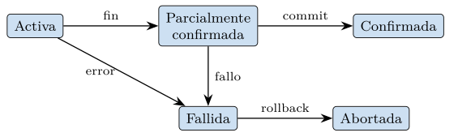
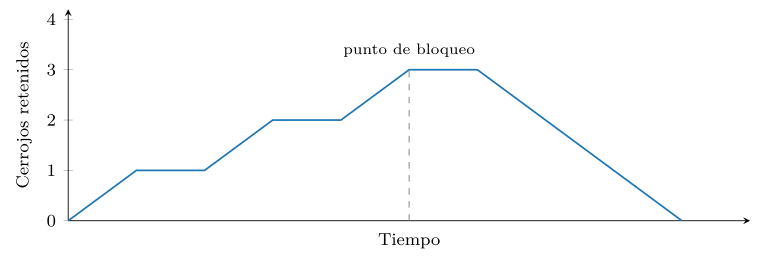
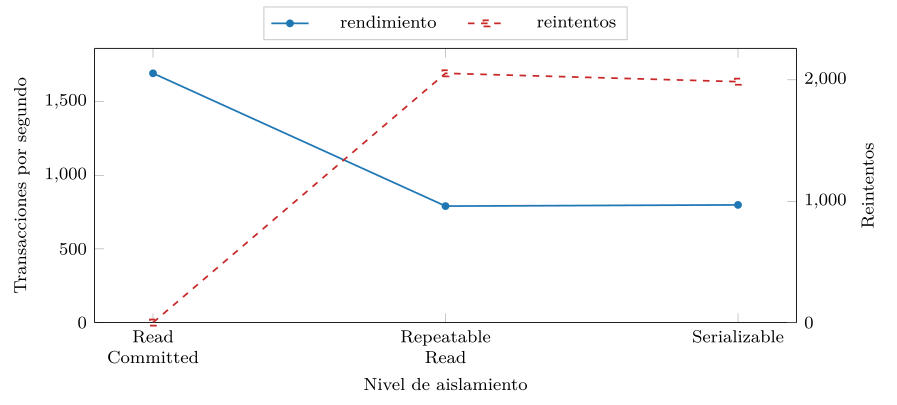

Capítulo 5. Transacciones, concurrencia y recuperación
El capítulo 4 enseñó a repartir la información de modo que cada hecho viva una sola vez. Pero un hecho que vive una vez también se cambia una vez, y rara vez de forma aislada: transferir dinero entre dos cuentas resta de una y suma a otra; matricular a un alumno inserta una fila y decrementa las plazas libres; confirmar un pedido toca el stock, el carrito y la factura. Son varias órdenes que el negocio entiende como una sola, y que han de ocurrir todas o ninguna. Si el sistema se cae entre la resta y la suma, el dinero se evapora; si dos cajeros restan a la vez del mismo saldo, desaparece sin que nadie lo gaste. La transacción es la respuesta de las bases de datos a este problema: la unidad de trabajo que el sistema trata como atómica, indivisible frente a los fallos y frente a la concurrencia.
Este capítulo es la cima del rigor relacional. Las cuatro letras de ACID —atomicidad, consistencia, aislamiento y durabilidad— son la promesa más fuerte que un sistema de datos puede hacer: que un conjunto de cambios ocurre por completo o no ocurre, que nunca deja la base en un estado que viole sus reglas, que se ejecuta como si nadie más estuviera tocando los datos, y que una vez confirmado sobrevive a cualquier caída. Sostener esa promesa cuesta, y entender su coste es el objetivo del capítulo: solo quien sabe lo que cuesta garantizar ACID comprende por qué los sistemas distribuidos de la segunda parte renuncian, deliberadamente, a parte de ella.
El recorrido va de la promesa al mecanismo. Primero se enuncian las propiedades ACID y se define la transacción. Después se plantea el problema de la concurrencia —qué puede salir mal cuando muchas transacciones se entrelazan— y su criterio de corrección, la serializabilidad. Luego los dos grandes mecanismos para alcanzarla: el bloqueo y el control multiversión. A continuación, cómo se sobrevive a una caída: el registro histórico y la recuperación. Y, antes de la práctica y la síntesis, una sección sobre lo que cambia cuando la base deja de vivir en un solo nodo y pasa a la nube, donde la durabilidad se vuelve replicación y el propio ACID empieza a tensarse —el preludio exacto de la Parte II.
Las propiedades ACID
Una transacción es una secuencia de operaciones sobre la base de datos que el sistema ejecuta como una sola unidad lógica de trabajo. Empieza con un BEGIN (explícito o implícito), agrupa lecturas y escrituras, y termina de una de dos maneras: con COMMIT, que confirma todos sus cambios de forma definitiva, o con ROLLBACK, que los deshace por completo como si nunca hubieran ocurrido. El ejemplo canónico es la transferencia (listado 5.1): restar de una cuenta y sumar a otra son dos órdenes que solo tienen sentido juntas.
BEGIN;
UPDATE cuenta SET saldo = saldo - 100 WHERE id = 1;
UPDATE cuenta SET saldo = saldo + 100 WHERE id = 2;
COMMIT;Listado 5.1. Una transferencia: dos actualizaciones que han de ocurrir ambas o ninguna.
El acrónimo ACID, acuñado por Härder y Reuter (1983), nombra las cuatro garantías que el sistema ofrece sobre esa unidad.
- Atomicidad (A).
-
La transacción es indivisible: o se ejecutan todas sus operaciones, o ninguna. Si algo falla a mitad —un error, una caída, un
ROLLBACKexplícito—, el sistema deshace los cambios parciales y deja la base como estaba antes delBEGIN. No existe el estado intermedio en el que se restó pero no se sumó. - Consistencia (C).
-
Una transacción lleva la base de un estado válido a otro estado válido. «Válido» significa que se respetan todas las reglas de integridad declaradas: las claves primarias y ajenas del capítulo 2, las restricciones
CHECK, los disparadores. La transacción puede violar una regla en medio —entre la resta y la suma, el dinero total no cuadra—, pero al confirmarse el estado vuelve a ser consistente, o no se confirma. - Aislamiento (I).
-
Cada transacción se ejecuta como si fuera la única en el sistema. Aunque muchas corran a la vez, el resultado debe ser el mismo que si se hubieran ejecutado una tras otra, en algún orden. El aislamiento es la propiedad más sutil y la más cara, y a ella se dedican las secciones 5.2 y 5.3.
- Durabilidad (D).
-
Una vez que el sistema responde «
COMMITcorrecto», los cambios sobreviven a cualquier fallo posterior: un corte de luz, una caída del proceso, un reinicio. Lo confirmado está confirmado, pase lo que pase. Cómo se logra sin escribir cada cambio inmediatamente en disco es el tema de la sección 5.5.
La consistencia merece un matiz, porque es la única letra que el diseñador declara. Las reglas que la transacción debe respetar son las restricciones del esquema —las del capítulo 2 y 4—, y se enuncian en el propio CREATE TABLE (listado 5.2). Cuando una transacción intenta confirmar un estado que las viola —un saldo negativo, una clave ajena que apunta a nada—, el gestor la rechaza y la aborta: la consistencia se hace cumplir abortando, no corrigiendo.
CREATE TABLE cuenta (
id integer PRIMARY KEY,
saldo integer NOT NULL CHECK (saldo >= 0)
);
-- una transferencia que dejara el saldo en negativo
-- viola el CHECK y el gestor la aborta enteraListado 5.2. Las reglas de consistencia se declaran en el esquema; el gestor las hace cumplir abortando lo que las viola.
Conviene separar de quién es cada responsabilidad. La atomicidad, el aislamiento y la durabilidad las garantiza el sistema gestor; la consistencia es compartida. El gestor hace cumplir las reglas declaradas, pero quién decide cuáles son esas reglas —que el saldo no sea negativo, que la suma se conserve— es el diseñador. ACID no inventa la corrección del negocio; protege la corrección que el esquema ya declara frente a los fallos y la concurrencia.
Observación. Las cuatro letras no son independientes. La atomicidad y la durabilidad son dos caras del mismo mecanismo —el registro histórico—: deshacer lo no confirmado (atomicidad) y rehacer lo confirmado pero aún no escrito (durabilidad) se apoyan en el mismo log. Y el aislamiento sirve a la consistencia: sin él, dos transacciones individualmente correctas pueden, al entrelazarse, dejar la base en un estado que ninguna habría producido por separado. Las anomalías de la sección siguiente son, precisamente, ejemplos de eso.
El estado intermedio inválido es inevitable y por eso la atomicidad importa. En la transferencia, tras la primera orden el sistema ha quitado cien pero aún no los ha puesto: el total no cuadra. Esa ventana de inconsistencia existe siempre; lo que ACID garantiza es que nadie de fuera la vea (aislamiento) y que ningún fallo la deje permanente (atomicidad). La transacción es, en el fondo, una valla alrededor de esa ventana.
Por dentro, una transacción atraviesa una secuencia de estados bien definida (figura 5.1). Nace activa y va ejecutando sus operaciones; cuando emite su última, pasa a parcialmente confirmada —ha terminado pero sus cambios aún no son durables, porque falta asegurar el registro—; si esa escritura del registro tiene éxito, pasa a confirmada, y entonces, y solo entonces, el sistema promete durabilidad. Por la otra rama, si en cualquier momento ocurre un error —una violación de restricción, un ROLLBACK explícito, una caída—, la transacción pasa a fallida y de ahí a abortada, tras deshacer sus efectos. El COMMIT es el punto de no retorno: antes de él todo puede deshacerse; después, nada.

La atomicidad es todo-o-nada, pero a veces conviene un deshacer parcial: revertir solo la última parte de una transacción larga sin abortarla entera. Para eso están los puntos de recuperación (savepoints), marcas intermedias a las que se puede volver (listado 5.3). No rompen la atomicidad —la transacción sigue confirmándose o abortándose como un todo—, sino que dan control fino sobre qué parte de su trabajo se conserva si un paso falla. Reaparecerán en la recuperación: deshacer hasta un savepoint es el mismo mecanismo de imágenes anteriores que deshace una transacción entera, solo que detenido antes.
BEGIN;
INSERT INTO pedido (id, total) VALUES (10, 250);
SAVEPOINT linea_extra;
INSERT INTO pedido (id, total) VALUES (11, 999);
-- el segundo pedido era un error: lo deshacemos solo a el
ROLLBACK TO SAVEPOINT linea_extra;
COMMIT; -- se confirma solo el pedido 10Listado 5.3. Puntos de recuperación: deshacer parte de una transacción sin abortarla entera.
Conviene una última precisión sobre cuándo empieza y acaba una transacción. En el modo de autoconfirmación (autocommit), que es el de muchos clientes por defecto, cada orden suelta es su propia transacción: se confirma sola al terminar. Eso es cómodo para una consulta aislada, pero peligroso para la transferencia, cuyas dos órdenes quedarían en transacciones distintas y, por tanto, sin atomicidad entre ellas. Agruparlas exige un BEGIN explícito. Además, declarar una transacción de solo lectura cuando no va a escribir —con BEGIN READ ONLY— permite al gestor optimizarla: sabe que no generará versiones nuevas ni necesitará cerrojos exclusivos, y puede servirla de una instantánea sin coste de escritura. La elección del marco transaccional no es un detalle de sintaxis: define dónde está la valla de atomicidad.
Planificaciones y serializabilidad
Ejecutar las transacciones de una en una, en serie, sería trivialmente correcto y desesperadamente lento: mientras una espera al disco, la máquina queda ociosa. Por eso el gestor entrelaza las operaciones de muchas transacciones a la vez. Una planificación (o schedule) es un orden concreto en que se intercalan las operaciones de varias transacciones. El problema es que no todo entrelazado preserva la corrección: algunos producen resultados que ninguna ejecución en serie habría dado. Esos son las anomalías de la concurrencia.
Las anomalías clásicas
Conviene verlas como interludios concretos. En las tablas siguientes, el tiempo corre hacia abajo y cada columna es una transacción; \(r(x)\) es leer el dato \(x\) y \(w(x)\) escribirlo.
La actualización perdida (lost update): dos transacciones leen el mismo saldo y ambas escriben sobre él; la segunda escritura pisa la primera, que se pierde.
| \(T_1\) | \(T_2\) |
|---|---|
| \(r(\text{saldo})\) = | |
| \(r(\text{saldo})\) = | |
| \(w(\text{saldo})\) =\(+\)50 | |
| \(w(\text{saldo})\) =\(+\)30 |
El saldo acaba en 130, no en 180: el ingreso de \(T_1\) se ha perdido porque \(T_2\) escribió a partir de un valor que ya había quedado obsoleto.
La lectura sucia (dirty read): una transacción lee un dato que otra ha escrito pero aún no ha confirmado, y que puede deshacerse después.
| \(T_1\) | \(T_2\) |
|---|---|
| \(w(\text{saldo})\) = | |
| \(r(\text{saldo})\) = | |
| rollback | |
| decide sobre un 999 que nunca existió |
La lectura no repetible (non-repeatable read): una transacción lee un dato dos veces y obtiene valores distintos porque otra lo modificó y confirmó en medio. La lectura fantasma (phantom) es su variante sobre conjuntos: una consulta con condición devuelve un número de filas la primera vez y otro la segunda, porque otra transacción insertó o borró filas que cumplen la condición.
| \(T_1\) | \(T_2\) |
|---|---|
| count saldo\(\ge\)100 = | |
| insert fila (saldo 150) | |
| commit | |
| count saldo\(\ge\)100 = |
La misma consulta de \(T_1\) ve dos filas y luego tres: la tercera es el fantasma, una fila que apareció entre las dos lecturas y que rompe la ilusión de estar sola en el sistema. Y el sesgo de escritura (write skew): dos transacciones leen un mismo conjunto, comprueban una condición que se cumple, y cada una escribe algo que —por separado— la respeta pero que —juntas— la viola. Es la anomalía más escurridiza, y la única que sobrevive al aislamiento por instantáneas; volverá en la sección 5.3.
La serializabilidad como criterio
¿Cuándo una planificación entrelazada es correcta? La respuesta de la teoría es elegante: una planificación es correcta si es serializable, es decir, si su efecto sobre la base es el mismo que el de alguna ejecución en serie de las mismas transacciones. No se exige un orden serial concreto —cualquiera vale—, solo que exista uno equivalente. La ejecución en serie se toma como definición de correcto porque en ella el aislamiento es perfecto por construcción: nadie se entrelaza con nadie.
Definición (Planificación serializable). Una planificación de un conjunto de transacciones es serializable si es equivalente, en su efecto sobre la base de datos, a alguna planificación en serie (no entrelazada) de esas mismas transacciones.
Comprobar la equivalencia en abstracto es difícil, así que se usa un criterio más fuerte y mecánico: la serializabilidad en cuanto a conflictos. Dos operaciones conflictúan si pertenecen a transacciones distintas, acceden al mismo dato y al menos una es una escritura (los tres casos: escritura-escritura, escritura-lectura y lectura-escritura). El orden relativo de dos operaciones que conflictúan importa; el de dos que no conflictúan, no. Una planificación es serializable en cuanto a conflictos si se puede llevar a una planificación en serie intercambiando solo operaciones que no conflictúan.
Este criterio se decide con un grafo. El grafo de precedencia tiene un nodo por transacción y una arista \(T_i \to T_j\) cuando una operación de \(T_i\) precede y conflictúa con una de \(T_j\). El teorema central es directo de enunciar y de usar:
Una planificación es serializable en cuanto a conflictos si y solo si su grafo de precedencia es acíclico.
Si el grafo no tiene ciclos, cualquier orden topológico de sus nodos es un orden serial equivalente; si tiene un ciclo, no existe tal orden, porque cada transacción del ciclo tendría que ir antes que sí misma. La figura 5.2 muestra el caso mínimo no serializable: \(T_1\) escribe \(x\) que \(T_2\) lee, y \(T_2\) escribe \(y\) que \(T_1\) lee, de modo que \(T_1\) debe ir antes que \(T_2\) por un dato y después por el otro. El ciclo es la imposibilidad hecha dibujo.
Ejemplo (). La actualización perdida de antes tiene este grafo. \(T_1\) lee el saldo que \(T_2\) luego escribe (arista \(T_1 \to T_2\) por el conflicto lectura-escritura), y \(T_2\) lee el saldo que \(T_1\) también escribe (arista \(T_2 \to T_1\)). El ciclo confirma que la planificación no es serializable: no hay orden serial —ni \(T_1\) antes de \(T_2\) ni al revés— que pierda un ingreso. La anomalía y el ciclo son la misma cosa vista desde dos lados.
No toda planificación entrelazada es mala, y conviene ver también el caso bueno. La de la tabla siguiente entrelaza tres transacciones sobre dos datos \(x\) e \(y\) sin producir ningún ciclo.
| \(T_1\) | \(T_2\) | \(T_3\) |
|---|---|---|
| \(r(x)\) | ||
| \(w(x)\) | ||
| \(r(x)\) | ||
| \(w(y)\) | ||
| \(r(y)\) | ||
| \(w(y)\) |
Sus conflictos son dos: \(T_1\) escribe \(x\) que \(T_2\) luego lee (arista \(T_1 \to T_2\)) y \(T_2\) escribe \(y\) que \(T_3\) luego lee y reescribe (arista \(T_2 \to T_3\)). El grafo de precedencia es la cadena \(T_1 \to T_2 \to T_3\), sin ciclos, así que la planificación es serializable; su único orden topológico, \(T_1, T_2, T_3\), es la ejecución en serie equivalente. La lección práctica: el entrelazado no es malo en sí —aquí las tres transacciones se solapan y el resultado es correcto—; lo malo es el entrelazado que cierra un ciclo, y el grafo lo distingue mecánicamente del que no.
La serializabilidad da, así, una definición precisa de qué significa «aislar» y un procedimiento para verificarlo. Lo que falta es conseguirla sin construir el grafo a posteriori: mecanismos que, durante la ejecución, impidan que aparezca un ciclo. Hay dos grandes familias, y son el tema de la sección siguiente.
Control de concurrencia
Garantizar la serializabilidad en tiempo de ejecución se aborda de dos maneras opuestas en filosofía. La pesimista supone que los conflictos son probables y los previene haciendo esperar: es el bloqueo. La optimista supone que los conflictos son raros, deja correr a todos sobre copias coherentes y solo interviene si al final detecta un choque: es el control multiversión. Los sistemas relacionales modernos usan sobre todo la segunda, pero la primera es más fácil de razonar y sigue presente, así que se empieza por ella.
Bloqueo y el protocolo de dos fases
La idea del bloqueo es que, antes de tocar un dato, una transacción adquiere un cerrojo (lock) sobre él, y lo retiene hasta que ya no lo necesita. Hay dos modos: el cerrojo compartido (S, para leer), que varios pueden tener a la vez sobre el mismo dato, y el exclusivo (X, para escribir), que solo uno puede tener y que excluye a todos los demás. Quien quiera un cerrojo incompatible con los ya concedidos, espera.
El bloqueo por sí solo no basta para la serializabilidad; hace falta una disciplina sobre cuándo se adquieren y se sueltan. El protocolo de bloqueo en dos fases (2PL, two-phase locking) la impone: cada transacción tiene una fase de crecimiento, en la que solo adquiere cerrojos, y una fase de decrecimiento, en la que solo los suelta; una vez que suelta el primero, no puede adquirir ninguno más. El teorema fundamental del bloqueo garantiza que toda planificación producida por 2PL es serializable en cuanto a conflictos. En la práctica se usa el 2PL estricto, que retiene los cerrojos exclusivos —los de escritura— hasta el COMMIT o el ROLLBACK (los compartidos, de lectura, pueden soltarse antes, en la fase de decrecimiento): así, además de serializable, la planificación es recuperable —nadie lee un cambio que luego se deshace, porque el cambio está bajo cerrojo hasta confirmarse.
El precio del bloqueo es doble. El obvio es la espera: una transacción que retiene un cerrojo serializa contra ella a todas las que lo necesiten. El sutil es el interbloqueo (deadlock): \(T_1\) tiene el cerrojo de \(x\) y pide el de \(y\), mientras \(T_2\) tiene el de \(y\) y pide el de \(x\); ninguna avanza y ninguna cede. El gestor lo resuelve detectando el ciclo de espera —un grafo de «quién-espera-a-quién» con la misma lógica acíclica de antes— y abortando a una de las transacciones, la víctima, que deberá reintentarse. El interbloqueo no es un error del programador: es una consecuencia estructural del bloqueo, y la aplicación ha de estar preparada para reintentar.
La forma del 2PL se ve bien dibujando cuántos cerrojos retiene una transacción a lo largo del tiempo (figura 5.3): una rampa de subida —la fase de crecimiento, en la que solo adquiere—, un máximo —el punto de bloqueo, el instante en que tiene todos los que necesitará— y una bajada —la fase de decrecimiento, en la que solo suelta—. La regla de las dos fases es exactamente que la curva tenga un único máximo: en cuanto empieza a bajar, no puede volver a subir. En el 2PL estricto, la bajada de los cerrojos exclusivos no es una rampa sino un escalón vertical en el COMMIT, que es lo que garantiza la recuperabilidad de la que trata el apartado siguiente.

COMMIT.Recuperabilidad y el efecto dominó
La serializabilidad asegura que el resultado es correcto, pero no basta por sí sola si hay abortos de por medio. La planificación siguiente lo ilustra: \(T_2\) lee un dato que \(T_1\) acaba de escribir y, confiando en él, confirma; si luego \(T_1\) aborta, \(T_2\) habría confirmado a partir de un valor que nunca existió, y no hay forma de deshacer un COMMIT.
| \(T_1\) | \(T_2\) |
|---|---|
| \(w(x)\) | |
| \(r(x)\) (lee lo no confirmado) | |
| commit | |
| rollback |
El COMMIT de \(T_2\) es irreversible, pero el ROLLBACK de \(T_1\) deja a \(T_2\) apoyada en un valor que se evaporó: la planificación no es recuperable. Para evitarlo, las planificaciones se clasifican por su comportamiento ante los abortos.
Definición (Planificación recuperable). Una planificación es recuperable si ninguna transacción confirma antes que todas aquellas de las que ha leído un dato. Así, si una transacción ha de abortar, las que dependen de ella aún no han confirmado y pueden abortar también.
Una planificación recuperable evita el caso anterior: si \(T_2\) leyó de \(T_1\), no se le permite confirmar hasta que \(T_1\) confirme. Es sin cascada si además ninguna transacción lee datos no confirmados, lo que evita el efecto dominó —que el aborto de una arrastre en cadena a todas las que la leyeron—. Y es estricta si ninguna transacción lee ni sobrescribe un dato no confirmado, la condición más fuerte y la que el 2PL estricto produce.
Observación. La serializabilidad y la recuperabilidad son propiedades distintas y ambas necesarias. La primera dice que el entrelazado equivale a un orden serie; la segunda, que los abortos no dejan a nadie apoyado en un dato que se evaporó. Una planificación puede ser serializable pero no recuperable, y entonces un aborto la rompe. Por eso los sistemas reales no se conforman con serializar: usan variantes estrictas —2PL estricto, o el control multiversión con su instantánea— que garantizan las dos cosas a la vez.
Granularidad y escalada del bloqueo
Falta decir sobre qué se ponen los cerrojos, y la respuesta tiene consecuencias de rendimiento. Un cerrojo puede tomarse sobre una fila, sobre una página, sobre una tabla entera o sobre toda la base; es la granularidad. La elección enfrenta dos costes opuestos. Un cerrojo fino —por fila— permite máxima concurrencia, porque dos transacciones que tocan filas distintas no se estorban, pero obliga a gestionar muchísimos cerrojos, con su consumo de memoria. Uno grueso —por tabla— es barato de gestionar, un solo cerrojo, pero serializa contra él a toda transacción que toque la tabla, aunque sea otra fila. La tabla 5.1 resume el compromiso.
| Granularidad | Concurrencia | Coste de gestión |
|---|---|---|
| Fila | alta | alto |
| Página | media | medio |
| Tabla | baja | bajo |
Como un cerrojo por fila se vuelve caro cuando una transacción toca millones de ellas, los gestores practican la escalada (lock escalation): cuando una transacción acumula demasiados cerrojos de fila sobre una tabla, los sustituye por uno solo de tabla. Y para que un cerrojo grueso y otro fino no se contradigan, se usan cerrojos de intención: antes de bloquear una fila, la transacción marca la tabla con una intención de bloqueo, de modo que otra que quiera bloquear la tabla entera detecte el conflicto sin recorrer fila a fila. La granularidad es, así, otra perilla de la balanza concurrencia-coste que recorre todo el capítulo.
El interbloqueo, descrito antes en abstracto, se ve mejor en SQL concreto. El listado 5.4 muestra dos sesiones que adquieren los mismos cerrojos en orden opuesto: cada UPDATE toma el cerrojo exclusivo de su fila, y luego cada una pide la del otro, que está ocupada. El motor detecta el ciclo de espera y aborta a una de las dos.
-- sesion A -- sesion B
BEGIN; BEGIN;
UPDATE cuenta SET saldo= UPDATE cuenta SET saldo=
saldo-1 WHERE id=1; saldo-1 WHERE id=2;
UPDATE cuenta SET saldo= UPDATE cuenta SET saldo=
saldo+1 WHERE id=2; saldo+1 WHERE id=1;
-- A espera el cerrojo de 2 -- B espera el cerrojo de 1
-- -> interbloqueo: el motor aborta una y la otra avanzaListado 5.4. Dos sesiones que se interbloquean al tomar los cerrojos en orden opuesto; el motor aborta a una.
Control multiversión (MVCC)
La alternativa optimista evita gran parte de la espera con una idea simple: no sobrescribir. En el control de concurrencia multiversión (MVCC), cada escritura crea una versión nueva del dato en lugar de pisar la anterior, y cada transacción lee la versión coherente con el instante en que empezó —su instantánea (snapshot)—. La consecuencia es la regla de oro de MVCC: las lecturas no bloquean a las escrituras ni las escrituras a las lecturas. Un lector ve una foto consistente del pasado mientras un escritor crea el futuro, y ninguno espera al otro. Solo dos escrituras sobre el mismo dato siguen entrando en conflicto.
PostgreSQL es un caso de manual de MVCC. Cada fila lleva oculto el identificador de la transacción que la creó y el de la que la borró o sustituyó; una transacción ve una versión si fue creada por una transacción visible para su instantánea y no borrada por otra igualmente visible. Las versiones obsoletas —las que ninguna instantánea viva puede ya ver— las recoge después un proceso de limpieza, el vacuum. El coste de no bloquear se paga, pues, en espacio y en mantenimiento: la base acumula versiones muertas que hay que barrer.
Verlo con números ayuda. Supóngase que la fila del saldo empieza valiendo 100, creada por la transacción 50, y que la transacción 70 lo cambia a 150. MVCC no pisa la fila: crea una versión nueva y marca la vieja como borrada por la 70 (listado 5.5). Una transacción cuya instantánea sea anterior a la 70 sigue viendo la versión vieja —100— como si la 70 no existiera; una posterior ve la nueva —150—. Las dos coexisten en la tabla hasta que ninguna instantánea viva pueda ya ver la vieja, momento en que el vacuum la recoge.
xmin xmax saldo visible para una instantanea...
---- ---- ----- -----------------------------
50 70 100 anterior a la transaccion 70
70 - 150 igual o posterior a la 70Listado 5.5. Dos versiones de la misma fila bajo MVCC: xmin la crea, xmax la retira. Cada lector ve la que su instantanea alcanza.
El nivel de aislamiento se elige por sesión o por transacción con una orden SQL estándar (listado 5.6); de ahí en adelante, las garantías que el motor ofrece son las de ese nivel. La misma sintaxis sirve para mostrar el otro rostro del bloqueo: dos transacciones que adquieren los mismos cerrojos en orden opuesto se interbloquean, y el motor aborta a una con un error que la aplicación ha de capturar y reintentar.
BEGIN ISOLATION LEVEL SERIALIZABLE;
-- a partir de aqui, ninguna anomalia: ni siquiera el sesgo
UPDATE cuenta SET saldo = saldo - 1 WHERE id = 1;
UPDATE cuenta SET saldo = saldo + 1 WHERE id = 2;
COMMIT; -- puede fallar con un error de serializacion: reintentarListado 5.6. Fijar el nivel de aislamiento de una transacción antes de operar.
Conviene cerrar el contraste entre las dos filosofías. El bloqueo previene el conflicto haciendo esperar; MVCC lo deja correr y lo resuelve al final, abortando si hace falta. Ninguna es universalmente mejor: el bloqueo sufre con las cargas de mucha lectura, que se serializan sin necesidad; MVCC sufre con las de mucha contención de escritura, donde los abortos y reintentos se multiplican.
| Bloqueo (pesimista) | MVCC (optimista) | |
|---|---|---|
| Ante el conflicto | hacer esperar | dejar correr |
| Si choca | interbloqueo | fallo de serialización |
| Brilla con | mucha escritura | mucha lectura |
| Sufre con | mucha lectura | mucha contención |
El lector reconocerá aquí el patrón pesimista-optimista que reaparece en otros rincones de la informática; en las bases de datos toma la forma concreta de «esperar» frente a «reintentar», y la elección la decide la carga de trabajo.
Observación. MVCC no es magia que elimine los conflictos; los traslada. Donde el bloqueo hace esperar, MVCC deja correr y, si al confirmar detecta que dos transacciones se han pisado de un modo que rompe la serializabilidad, aborta a una con un fallo de serialización. El conflicto no desaparece: cambia de forma, de «esperar» a «reintentar». Por eso, como con el interbloqueo, una aplicación que use el nivel serializable debe envolver sus transacciones en un bucle de reintento. Esto se mide en la práctica de la sección 5.7.
El aislamiento perfecto —la serializabilidad— cuesta, y no toda aplicación lo necesita. El estándar SQL ofrece por ello una escala de niveles de aislamiento, definidos por las anomalías que cada uno permite o impide. De menos a más estricto: read uncommitted (permite lecturas sucias), read committed (las impide, pero permite lecturas no repetibles y fantasmas), repeatable read (impide también las no repetibles) y serializable (no permite ninguna). La tabla 5.2 resume la definición del estándar.
| Nivel | Lectura sucia | No repetible | Fantasma |
|---|---|---|---|
| read uncommitted | sí | sí | sí |
| read committed | — | sí | sí |
| repeatable read | — | — | sí |
| serializable | — | — | — |
La tabla es el estándar, no la realidad de cada motor, y la diferencia es instructiva. PostgreSQL es más estricto que ANSI en dos puntos. Primero, no implementa de verdad read uncommitted: pedirlo da read committed, porque su MVCC nunca expone una versión no confirmada, de modo que la lectura sucia es imposible en cualquier nivel. Segundo, su repeatable read es, en realidad, aislamiento por instantáneas: cada transacción ve la foto del instante en que empezó, así que no solo las lecturas no repetibles, sino también los fantasmas, desaparecen —el estándar no obliga a tanto en ese nivel—. La práctica mide esta discrepancia y la hace visible.
Queda una grieta, y es importante. El aislamiento por instantáneas impide las cuatro anomalías de la tabla, pero no el sesgo de escritura: dos transacciones que leen la misma foto, comprueban cada una que la condición se cumple y escriben datos distintos, pueden romper juntas una regla que cada una respetaba. Por eso el serializable de PostgreSQL no es solo instantáneas: es aislamiento por instantáneas serializable (SSI), que vigila los patrones de lectura-escritura peligrosos y aborta a una de las transacciones implicadas antes de que el sesgo se materialice. Esa vigilancia es justo el origen de los fallos de serialización que hay que reintentar, y de la caída de rendimiento que la figura 5.4 medirá.
Ejemplo (). El sesgo de escritura, en concreto. Dos médicos están de guardia y el hospital exige que al menos uno lo esté. Cada uno, en su transacción, lee «hay dos de guardia» y decide darse de baja; bajo aislamiento por instantáneas ambas lecturas ven a los dos, ambas bajas se confirman, y el hospital se queda sin guardia. Ni \(T_1\) ni \(T_2\) violó la regla según su instantánea; la violación nace de la combinación, que ninguna vio. Solo el nivel serializable, que detecta el patrón, aborta a una y salva la guardia.
Registro histórico y recuperación
Falta la cuarta letra. ¿Cómo sobrevive lo confirmado a una caída, si escribir cada cambio en disco inmediatamente sería lentísimo? Y, del otro lado, ¿cómo se deshace limpiamente lo no confirmado cuando el sistema se reinicia tras un fallo a media transacción? Las dos preguntas —durabilidad y atomicidad frente a fallos— tienen una sola respuesta: el registro histórico (log).
Conviene distinguir los fallos. Un fallo de transacción es un aborto individual (un ROLLBACK, una violación de restricción, una víctima de interbloqueo): afecta a una transacción y se resuelve deshaciéndola. Un fallo de sistema es una caída del proceso o un corte de luz: se pierde la memoria volátil, pero el disco sobrevive. Un fallo de medio es la pérdida del propio disco: contra él solo protegen las copias de seguridad y la replicación. El registro histórico aborda los dos primeros; el tercero lleva ya al terreno de la nube de la sección 5.6.
Contra el fallo de medio, el registro local no basta —si el disco muere, muere con él—, y la defensa clásica combina dos piezas: copias de seguridad periódicas del estado completo y archivado del registro (log shipping), es decir, copiar las anotaciones a otro soporte a medida que se generan. Con la última copia y el registro archivado desde ella se reconstruye la base hasta el instante anterior al fallo. Ese mismo mecanismo, llevado al extremo de enviar el registro a varias réplicas en tiempo real, es justo lo que la nube convierte en su forma de durabilidad, y por eso el fallo de medio es la bisagra natural hacia la sección 5.6.
El principio que lo sostiene todo es la escritura anticipada en el registro (WAL, write-ahead logging): antes de modificar un dato en disco, se escribe en el registro una anotación de ese cambio. El registro es un fichero secuencial —se añade al final, que es la escritura más rápida que un disco ofrece— y cada anotación guarda lo necesario para rehacer el cambio (la imagen nueva) y para deshacerlo (la imagen anterior). La regla WAL tiene dos cláusulas: la anotación de un cambio llega al registro antes que el cambio a la página de datos, y todas las anotaciones de una transacción llegan al registro antes de que su COMMIT se dé por bueno.
De ahí sale la durabilidad sin lentitud. Confirmar una transacción no exige escribir sus páginas de datos en disco —eso puede hacerse después, perezosamente—; exige solo que sus anotaciones, mucho más pequeñas y secuenciales, estén a salvo en el registro. El COMMIT es, en esencia, un flush del registro hasta esa anotación. Si el sistema cae justo después, las páginas de datos pueden estar desactualizadas, pero el registro contiene todo lo necesario para reconstruirlas.
Una anotación de registro es austera: un número de secuencia (LSN), la transacción a la que pertenece, el dato afectado y sus imágenes anterior y posterior. El listado 5.7 muestra la secuencia que deja la transferencia del listado 5.1: dos cambios enmarcados por el inicio y el COMMIT de la transacción 71. Cada línea basta, por sí sola, para rehacer el cambio (con la imagen «después») o deshacerlo (con la «antes»).
LSN txid tipo dato antes despues
--- ---- ------ ---------- ----- -------
101 71 BEGIN - - -
102 71 UPDATE cuenta[1] 500 400
103 71 UPDATE cuenta[2] 200 300
104 71 COMMIT - - -Listado 5.7. Las anotaciones de registro de una transferencia: dos cambios entre el inicio y el commit de la transaccion 71.
Observación. La consecuencia conceptual es profunda y se retomará en la nube: lo que realmente debe sobrevivir no son las páginas de datos, sino el registro. Las páginas son una materialización del registro que puede rehacerse; el registro es la verdad. «La base de datos es el registro» deja de ser una frase y se vuelve, en arquitecturas como la de la sección 5.6, una decisión de diseño literal.
Cuando el sistema reinicia tras un fallo, no sabe qué transacciones habían confirmado, cuáles estaban a medias, ni qué cambios habían llegado a las páginas de datos. La recuperación reconstruye un estado consistente leyendo el registro. El algoritmo de referencia es ARIES (Mohan et al. 1992), en tres pasadas:
Análisis. Recorre el registro desde el último punto de control para determinar qué transacciones estaban activas en el momento del fallo y qué páginas podían estar sucias.
Rehacer (redo). Reaplica, desde el registro, todos los cambios confirmados que quizá no llegaron a las páginas de datos. Tras esta pasada, el disco refleja todo lo que se había confirmado: es la durabilidad.
Deshacer (undo). Revierte los cambios de las transacciones que estaban a medias, usando las imágenes anteriores del registro. Tras esta pasada, no queda rastro de lo no confirmado: es la atomicidad.
Rehacer da la durabilidad; deshacer da la atomicidad; ambas salen del mismo registro. Para que la primera pasada no tenga que leer el registro entero desde el principio de los tiempos, el sistema escribe periódicamente puntos de control (checkpoints): instantes en los que fuerza las páginas sucias a disco y anota hasta dónde se ha llegado, de modo que la recuperación solo necesita mirar hacia atrás hasta el último. El punto de control acota el trabajo de recuperación a cambio de un coste regular de escritura; es otro punto de la balanza entre rendimiento normal y rapidez de recuperación.
Un ejemplo concreto fija las tres pasadas. Supóngase que, al caer el sistema, el registro contiene lo siguiente: la transacción 71 confirmó (su COMMIT está en el registro) pero sus páginas quizá no llegaron a disco; la 72 había escrito un cambio y no había confirmado. La recuperación procede así:
Análisis. Desde el último punto de control, determina que la 71 estaba confirmada y la 72 quedó a medias (no hay
COMMITsuyo).Rehacer. Reaplica los cambios de la 71 desde sus imágenes «después», por si no habían llegado a las páginas: la durabilidad de lo confirmado queda restaurada.
Deshacer. Revierte los cambios de la 72 desde sus imágenes «antes»: la atomicidad de lo no confirmado queda restaurada, como si la 72 nunca hubiera existido.
Al terminar, la base refleja exactamente las transacciones confirmadas y ninguna de las que estaban a medias. Nótese la asimetría que el registro permite: rehacer necesita la imagen «después», deshacer necesita la «antes», y por eso cada anotación guarda ambas. Esa es toda la maquinaria —un fichero secuencial y dos pasadas— sobre la que descansan la atomicidad y la durabilidad de cualquier base relacional.
Queda un detalle de rendimiento que conecta con la concurrencia. Si cada COMMIT forzara su propio flush del registro a disco, el ritmo de confirmaciones quedaría limitado por la latencia del disco, miserablemente baja frente a la velocidad de la CPU. Por eso los gestores practican la confirmación en grupo (group commit): acumulan las anotaciones de varias transacciones que confirman casi a la vez y las escriben de un solo golpe, amortizando una sola operación de disco entre muchas confirmaciones. Es el mismo patrón que recorre el libro —agrupar para amortizar el acceso lento— aplicado ahora a la durabilidad: muchas transacciones comparten el coste de un único flush.
Las garantías en la nube
Todo lo anterior supone un único nodo: una máquina con su memoria, su disco y su registro. Es el supuesto que la segunda parte de este libro romperá, y conviene ver ya por qué la nube lo tensa, porque cambia dos cosas de raíz: dónde vive la durabilidad y hasta dónde escala el propio ACID. La pregunta de fondo —más allá de grabar en memoria o en disco, ¿no falta la opción de trabajar en la nube?— tiene aquí su respuesta natural, justo donde el registro y la recuperación se redefinen.
Separar el cómputo del almacenamiento
La arquitectura clásica acopla las dos cosas: el mismo servidor que ejecuta las consultas guarda los datos en su disco local. La nube las separa. En sistemas como Amazon Aurora (Verbitski et al. 2017), los nodos de cómputo son casi sin estado y el registro se envía a una capa de almacenamiento distribuida y replicada en varias zonas de disponibilidad. El lema de su diseño —el registro es la base de datos— lleva al límite la observación de la sección anterior: en lugar de escribir páginas de datos, los nodos de cómputo solo emiten anotaciones de registro, y la capa de almacenamiento materializa las páginas a partir de ellas, en segundo plano y en paralelo.
El efecto sobre la durabilidad es un cambio de naturaleza. Confirmar ya no es hacer flush a un disco local, sino lograr que la anotación llegue a un quórum de réplicas de almacenamiento. Aurora, en concreto, guarda seis copias —dos en cada una de tres zonas— y confirma en cuanto cuatro acusan recibo: ese umbral está elegido para que la escritura sobreviva a la caída de una zona entera —dos copias— y todavía de una copia más. La durabilidad deja de ser una propiedad de un disco y pasa a ser una propiedad de la replicación: el dato sobrevive no porque esté en un soporte fiable, sino porque está en suficientes soportes a la vez. A cambio se obtienen elasticidad —añadir cómputo sin mover datos— y tolerancia a la pérdida de un nodo o de una zona entera, que era el fallo de medio contra el que el registro local nada podía.
ACID a escala global
La separación anterior reparte el almacenamiento pero mantiene una transacción sobre datos esencialmente en un sitio. El paso siguiente es repartir también los datos por el planeta y seguir ofreciendo ACID. Google Spanner (Corbett et al. 2012) es el ejemplo emblemático: combina la replicación por consenso (Paxos) con un servicio de tiempo, TrueTime, que expone la incertidumbre del reloj como un intervalo acotado. Con él, Spanner asigna a cada transacción una marca temporal y garantiza consistencia externa —el orden de las transacciones respeta el orden real— a escala global, esperando deliberadamente a que pase la incertidumbre del reloj antes de confirmar. El precio del ACID planetario es, literalmente, esa espera: una latencia de confirmación acotada por cuánto puede equivocarse el reloj.
Spanner demostró que el ACID planetario era posible, aunque al precio de un servicio de tiempo con hardware dedicado. La década siguiente lo generalizó: una familia de bases de datos de SQL distribuido —CockroachDB, YugabyteDB, TiDB— ofrece hoy transacciones serializables a escala geográfica sin ese hardware, apoyándose en el consenso Raft y en marcas de tiempo por software en lugar de en un reloj atómico (Taft et al. 2020). El ACID global dejó de ser una hazaña de un solo proveedor para volverse una categoría de producto.
La tabla 5.3 contrasta las dos formas de sostener cada garantía. No es que la nube ofrezca menos ACID, sino que paga por él en otra moneda: donde el nodo único gasta un flush a disco, la nube gasta latencia de red y consenso; lo que gana a cambio es resistir la pérdida de una zona entera y crecer en cómputo sin mover los datos.
| Garantía | Nodo único | Nube |
|---|---|---|
| Durabilidad | flush del registro a disco local | quórum de réplicas en |
| varias zonas | ||
| Atomicidad | deshacer local desde el registro | confirmación distribuida |
| (two-phase commit) | ||
| Aislamiento | cerrojos o MVCC en un nodo | consenso y marcas de tiempo |
| globales |
A esto se suma el modelo sin servidor (serverless), en el que el cómputo se asigna y se cobra por uso y puede caer a cero cuando no hay carga, mientras el almacenamiento persiste aparte. Es la consecuencia económica de separar las dos cosas: si el estado vive en la capa de almacenamiento replicada, los nodos de cómputo se vuelven prescindibles y elásticos. Varios motores vectoriales de la cuarta parte se ofrecen así, y entenderlo aquí —en el capítulo de las transacciones— evita confundir «no hay servidor encendido» con «no hay datos»: los datos siguen, durables, en el quórum; lo que se apaga es el cómputo.
Observación. La nube no deroga ACID; redistribuye su coste. La durabilidad se vuelve quórum de réplicas en lugar de flush a disco; el aislamiento global se paga en latencia de reloj; la atomicidad sobre varios nodos exige protocolos de confirmación distribuida —el two-phase commit— que la Parte II estudiará. Y en cuanto los datos se reparten y la red puede partirse, aparece la tensión que el teorema CAP formaliza: no se puede tener a la vez consistencia perfecta y disponibilidad total bajo una partición. Mantener ACID a escala obliga a elegir, y muchos sistemas eligen relajarlo. Ese es, exactamente, el puente a la segunda parte.
Así, «grabar en memoria o en disco» se generaliza en la nube a «grabar en un servicio de almacenamiento remoto y replicado». El disco deja de ser un soporte local para convertirse en un quórum a través de la red, y la persistencia pasa de ser un problema de hardware a ser un problema de replicación y consenso. El capítulo 1 presentó la jerarquía memoria-disco; la nube le añade un peldaño cuya fiabilidad no viene del medio, sino del número de copias. Las partes II y IV de este libro —la distribución y los motores vectoriales gestionados— viven en ese peldaño.
Práctica: anomalías y coste medidos
La teoría de este capítulo es comprobable, y la práctica la comprueba sobre un motor real. El módulo src/cap05_concurrencia.py —que usa el servicio PostgreSQL del docker-compose de infra/ y la CPU, sin GPU ni torch, según la tabla de recursos— abre varias conexiones a la vez, entrelaza transacciones para reproducir cada anomalía en cada nivel de aislamiento, y mide después el coste de endurecer ese nivel bajo contención.
La matriz de anomalías y el coste, medidos
El módulo reproduce las cuatro anomalías —lectura sucia, no repetible, fantasma y sesgo de escritura— en los tres niveles que PostgreSQL distingue, entrelazando a mano dos transacciones para forzar cada caso (listado 5.8). El resultado no es la tabla del estándar, sino la del motor, y la diferencia es el hallazgo: PostgreSQL nunca permite la lectura sucia y su repeatable read ya evita los fantasmas, porque es aislamiento por instantáneas. La única anomalía que sobrevive por encima de read committed es el sesgo de escritura, que solo el nivel serializable elimina.
def no_repetible(a, b, iso):
reiniciar(a)
begin(a, iso)
v1 = a.execute(
"select saldo from cuenta where id=1").fetchone()[0]
begin(b, "READ COMMITTED")
b.execute("update cuenta set saldo=200 where id=1")
b.execute("commit")
v2 = a.execute(
"select saldo from cuenta where id=1").fetchone()[0]
a.execute("commit")
return v1 != v2 # True si la anomalia ocurrioListado 5.8. Reproducir la lectura no repetible: A lee dos veces, B actualiza y confirma en medio.
El listado 5.9 muestra la matriz que el módulo escribe. Léase contra la tabla 5.2 del estándar: las casillas donde PostgreSQL pone un cero y ANSI permitiría un «sí» son, precisamente, las dos en que el motor es más estricto que la norma.
nivel sucia no_repetible fantasma sesgo
READ_COMMITTED 0 1 1 1
REPEATABLE_READ 0 0 0 1
SERIALIZABLE 0 0 0 0Listado 5.9. Matriz de anomalias medida sobre PostgreSQL (1 = ocurre, 0 = se evita): mas estricta que ANSI.
Que el aislamiento más fuerte cuesta es una afirmación cuantitativa, y por tanto se mide. El módulo lanza cuatro hilos que compiten por incrementar el mismo saldo, cada uno con su bucle de reintento ante los fallos de serialización, y registra en cada nivel cuántas transacciones por segundo se completan y cuántos reintentos hicieron falta. La predicción, declarada antes de medir: al endurecer el aislamiento, el rendimiento baja y los reintentos suben, porque el motor convierte la espera implícita en abortos explícitos que la aplicación debe repetir.
La medida confirma la predicción a grandes rasgos, con un matiz que conviene no maquillar (figura 5.4). Bajo read committed no hay fallos de serialización y el rendimiento es máximo. Endurecer a cualquiera de los niveles fuertes —repeatable read o serializable— lo reduce a menos de la mitad y dispara los reintentos de cero a varios miles: ese es el coste grande, y es robusto. El matiz: bajo esta contención extrema —cuatro hilos sobre una sola fila— repeatable read y serializable rinden casi igual, y su orden cambia de una corrida a otra, porque ambos serializan ya casi todo; el escalón caro es abandonar read committed, no el último paso entre los dos niveles fuertes. La curva pone número a la frase «el aislamiento cuesta»: la seguridad de no tener anomalías se paga en transacciones que se abortan y se repiten. El listado 5.10 recoge las cifras de la corrida que alimenta la figura.
READ COMMITTED 1691.7 tx/s 0 reintentos
REPEATABLE READ 790.5 tx/s 2054 reintentos
SERIALIZABLE 798.5 tx/s 1985 reintentosListado 5.10. Coste del aislamiento bajo contención, salida del módulo en una corrida real (PostgreSQL 16.14): cae el rendimiento, se disparan los reintentos.
Conviene recordar lo que la medida no captura: el coste de las anomalías que los niveles débiles permiten —una guardia perdida, un saldo incoherente— que no aparece en el eje de rendimiento pero puede ser mucho mayor que el de unos reintentos. La figura mide el coste de la seguridad, no el de su ausencia. Y hay un segundo límite, de escala: estas cifras salen de una sola máquina —cuatro hilos del mismo PostgreSQL sobre una fila— y miden el coste de la concurrencia en memoria, no el del aislamiento distribuido. Las garantías que la sección sobre la nube describió —el quórum de réplicas, la latencia de red, el consenso entre zonas— pagan un precio que estos números, medidos en un solo nodo, no recogen; observarlo exigiría un sistema repartido real, no un banco local.

src/cap05_concurrencia.py (PostgreSQL 16.14; cuatro hilos, 200 transacciones, mediana de cinco medidas); las cifras de reloj varían con el entorno.La demostración y los límites de lo medido
Fiel a la convención, el módulo ejecuta quince transferencias, una en cada nivel por turnos, cada una con un escritor rival que modifica la misma cuenta justo después de su lectura (listado 5.11). El desenlace lo fija el nivel: bajo read committed la escritura se reaplica sobre el valor nuevo y confirma; bajo los niveles fuertes —repeatable read y serializable— el motor la aborta con un fallo de serialización que la aplicación tendría que reintentar. Ver los ROLLBACK concretos, nacidos de una contención real y no escritos a mano, es el hábito de inspeccionar una muestra real que acompaña a todo el libro.
n nivel desenlace
-- ---------------- ---------
0 READ COMMITTED COMMIT
1 REPEATABLE READ ROLLBACK
2 SERIALIZABLE ROLLBACK
3 READ COMMITTED COMMIT
4 REPEATABLE READ ROLLBACK
5 SERIALIZABLE ROLLBACK
6 READ COMMITTED COMMIT
7 REPEATABLE READ ROLLBACK
8 SERIALIZABLE ROLLBACK
9 READ COMMITTED COMMIT
10 REPEATABLE READ ROLLBACK
11 SERIALIZABLE ROLLBACK
12 READ COMMITTED COMMIT
13 REPEATABLE READ ROLLBACK
14 SERIALIZABLE ROLLBACKListado 5.11. Quince transacciones con su nivel y desenlace, cada una con un escritor rival concurrente: los niveles fuertes abortan donde \textsc{read committed} confirma. Salida de una corrida real (PostgreSQL 16.14).
Conviene cerrar con honestidad sobre el alcance de lo medido. La matriz refleja el comportamiento de PostgreSQL, no el del estándar ni el de otros motores: Oracle, SQL Server o MySQL implementan los niveles con decisiones distintas, y trasladar estas casillas a otro motor sin medir sería un error. Las cifras de rendimiento, además, dependen de la contención concreta del experimento —cuatro hilos sobre una sola fila es un caso extremo elegido para que el coste se vea—; con menos contención la diferencia entre niveles se estrecha. Y lo más importante: la práctica muestra que el nivel serializable produce abortos, pero no exime de manejarlos; es la aplicación quien debe envolver sus transacciones en un bucle de reintento. Elegir el nivel de aislamiento es, por eso, una decisión de ingeniería —cuánta anomalía tolera el negocio frente a cuánto reintento tolera el sistema—, no un valor por defecto que se deje sin pensar.
Síntesis y puente a la segunda parte
Este capítulo ha cerrado la primera parte con la garantía más fuerte del modelo relacional. La transacción agrupa varias operaciones en una unidad que el sistema trata como atómica; las propiedades ACID prometen que esa unidad ocurre por completo o no ocurre, que nunca deja la base en un estado inválido, que se ejecuta como si estuviera sola y que, una vez confirmada, sobrevive a cualquier fallo. La serializabilidad define con precisión qué significa «ejecutarse como si estuviera sola» y da un criterio mecánico —el grafo acíclico— para verificarlo. El bloqueo y el control multiversión lo consiguen en tiempo de ejecución, cada uno con su precio: espera e interbloqueo el primero, versiones muertas y reintentos el segundo. Y el registro de escritura anticipada sostiene a la vez la atomicidad y la durabilidad: deshacer lo no confirmado y rehacer lo confirmado salen del mismo fichero secuencial.
El lector se lleva, con esto, el armazón completo de la primera parte: del dato persistente (capítulo 1) al modelo relacional (capítulo 2), de la consulta declarativa (capítulo 3) al buen reparto de la información (capítulo 4) y, ahora, a la garantía de que ese reparto se cambia de forma segura. Es un edificio coherente y cerrado, construido sobre un supuesto que no se ha nombrado hasta este capítulo pero que lo sostiene entero: que hay un único nodo, una única copia coherente de la verdad, sobre la que todas estas garantías se definen.
Ese supuesto es lo que la segunda parte rompe. La escala web —millones de usuarios, datos que no caben en una máquina, servicio que no puede pararse— obliga a replicar y a repartir los datos por muchos nodos, y en cuanto la red que los une puede fallar, el teorema CAP demuestra que no se puede tener a la vez consistencia perfecta y disponibilidad total. Mantener ACID a escala, como se ha visto en la nube, cuesta latencia y consenso; muchos sistemas deciden por ello relajar la consistencia a cambio de seguir disponibles, y nace el mundo de la consistencia eventual y los modelos BASE. Es la primera gran relajación del hilo conductor de este libro: el «igual a» exacto y siempre —el saldo que cuadra en todas partes en todo momento— empieza a ceder ante el «suficientemente igual, suficientemente pronto». La segunda parte cuenta esa cesión, y el contraste solo se entiende habiendo visto antes, en este capítulo, lo que cuesta no hacerla.
Ejercicios propuestos
Lecturas recomendadas
Härder y Reuter (1983): el artículo que acuñó el término ACID y fijó los principios de la recuperación orientada a transacciones; el origen de todo el capítulo.
Gray y Reuter (1992): el tratado de referencia sobre procesamiento de transacciones, del bloqueo a la recuperación, con el rigor y los detalles de implementación que aquí solo se esbozan.
Berenson et al. (1995): la crítica de los niveles de aislamiento del estándar ANSI que clarificó el aislamiento por instantáneas y el sesgo de escritura; imprescindible para la sección 5.4.
Mohan et al. (1992): la descripción de ARIES, el algoritmo de recuperación con registro de escritura anticipada que casi todos los motores siguen.
Verbitski et al. (2017): el diseño de Amazon Aurora, donde «el registro es la base de datos» y la durabilidad se vuelve replicación; la base de la sección 5.6.
Kleppmann (2017): una exposición moderna y accesible de las transacciones, el aislamiento y el camino hacia los sistemas distribuidos de la segunda parte.